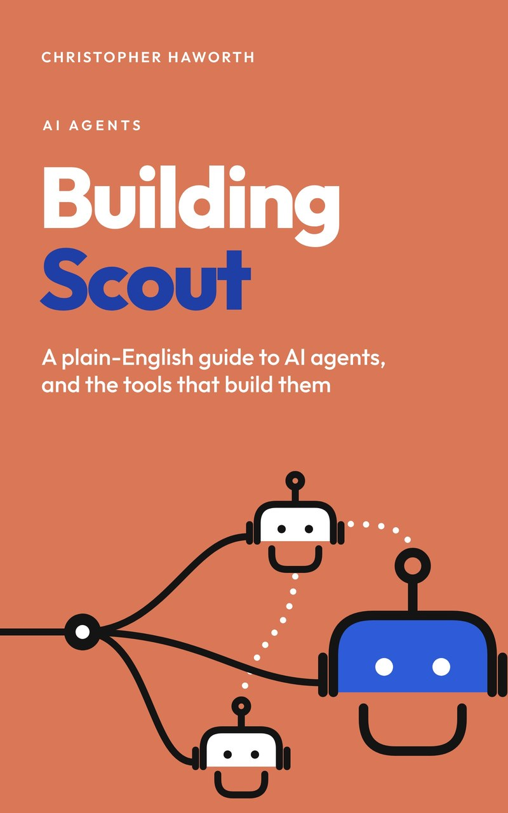

AI agents · by Christopher Haworth
Building Scout
A plain-English guide to AI agents, and the tools that build them
Build a working AI research assistant, even if you've never written code.
Free as a PDF or EPUB. Or try the live demo, or buy it on Amazon.
The book covers AI agents, tools, prompts, hooks, subagents, skills, MCP, LangGraph, long-running harnesses and autoresearch.
What you'll build
Scout: your own AI research assistant
Ask it a question, and it comes back with a short report you can trust. You'll build every part of it yourself, one chapter at a time, by directing Claude Code.
-
A team of AI agents researches any question
A planner splits your question up, researchers work on the pieces at the same time, and a writer pulls it all together.
-
Every claim is cited
Each point in the report links to where it came from, and a fact-checker reviews the report before you see it.
-
It ends up live on the internet
By the last chapter, Scout runs on its own web address that you can share with anyone.
How it works
Watch Scout think
Scout isn't one AI doing everything. It's a small team, and each member has one job. Pick a question and watch them work. This is an animation of what happens, so it costs nothing; to ask your own question, try the live demo.
You ask
Does drinking coffee affect how well you sleep?
Planner
- 1Caffeine's effect on sleep quality
- 2How long caffeine stays in the body
- 3Advice on when to stop drinking coffee
Researcher 1
Caffeine's effect on sleep quality
4 findings, each with its source
Researcher 2
How long caffeine stays in the body
3 findings, each with its source
Researcher 3
Advice on when to stop drinking coffee
3 findings, each with its source
- Planned 3 research task(s): Caffeine's effect on sleep quality; How long caffeine stays in the body; Advice on when to stop drinking coffee
- A researcher finished with 4 finding(s)
- A researcher finished with 3 finding(s)
- A researcher finished with 3 finding(s)
- Wrote a draft report
- Fact-checker approved the report
- You ask a question, the kind you'd normally spend an afternoon searching for.
- The planner breaks it into a few smaller questions.
- Researchers take one each and search the web at the same time.
- The writer turns their notes into a clear report.
- The fact-checker checks each claim against its source.
- You get a cited report, with links so you can check it yourself.
- 15chapters, each one adding a working piece
- 5parts, from first prompt to running on its own
- 4kinds of agent: planner, researcher, writer, fact-checker
- 1real app, live on the internet at the end
What's inside
Fifteen chapters, five parts
From your first conversation with Claude to Scout running on its own, with a glossary, answers and Scout's complete source code at the back.
Part OneFoundations
- What an agent actually is
- Setting up your workshop
- Talking to Claude well
Part TwoWorking with Claude Code
- Building with Claude Code
- Giving Claude a memory
- Checks that can say no
Part ThreeBuilding the agent
- Writing tools for agents
- A team of researchers
- Drawing the map
Part FourScaling your workshop
- Helpers with their own desks
- Teaching Claude your recipes
- Plugging into the world
Part FiveRunning on its own
- Work that outlasts a conversation
- The agent in a loop
- Shipping Scout
At the backAppendices
Answers to the tests, a glossary, what to do when things go wrong, Scout's complete source, and every source the book draws on.

Free download
Get the book free
The whole book, every prompt and every command, ready to follow along.
- PDF for reading on a computer, or printing.
- EPUB for e-readers, phones and tablets: Apple Books, Kobo, Google Play Books and most others.
Who it's for
- Complete beginners. If you can install an app, copy and paste, and follow a recipe, you can finish it. Every technical word is explained the first time it appears.
- People who keep hearing "agents" and "MCP" at work and want to know what they actually mean, by building something real with each of them.
What you'll need
Start now with the setup. Each link opens the right page.
- A computer running macOS, Windows 10 or 11, or Linux. Check it can run Claude Code (opens in a new tab)
- A Claude subscription (Pro or Max) or an Anthropic Console account, to use Claude Code. Compare Claude plans (opens in a new tab)Open the Anthropic Console (opens in a new tab)
- A little API credit. Each research question costs a few pence; ten pounds is plenty for the whole book. Add credit (opens in a new tab)Create an API key (opens in a new tab)
- A free GitHub account, for saving your work and putting Scout online. Sign up for GitHub (opens in a new tab)
- Patience for the first two chapters. Setting up is the dullest part, and it's over quickly. Install Claude Code (opens in a new tab)
Real output
See what Scout writes
Three finished reports, each with the steps Scout took to write it: the plan, the searches and the fact-check.
-
Example report
Does drinking coffee affect how well you sleep?
-
Example report
How do heat pumps compare with gas boilers for a typical UK home?
-
Example report
What did the UK's four-day working week trials find?
Want to ask your own question? Try the live demo. It answers a few questions each day.